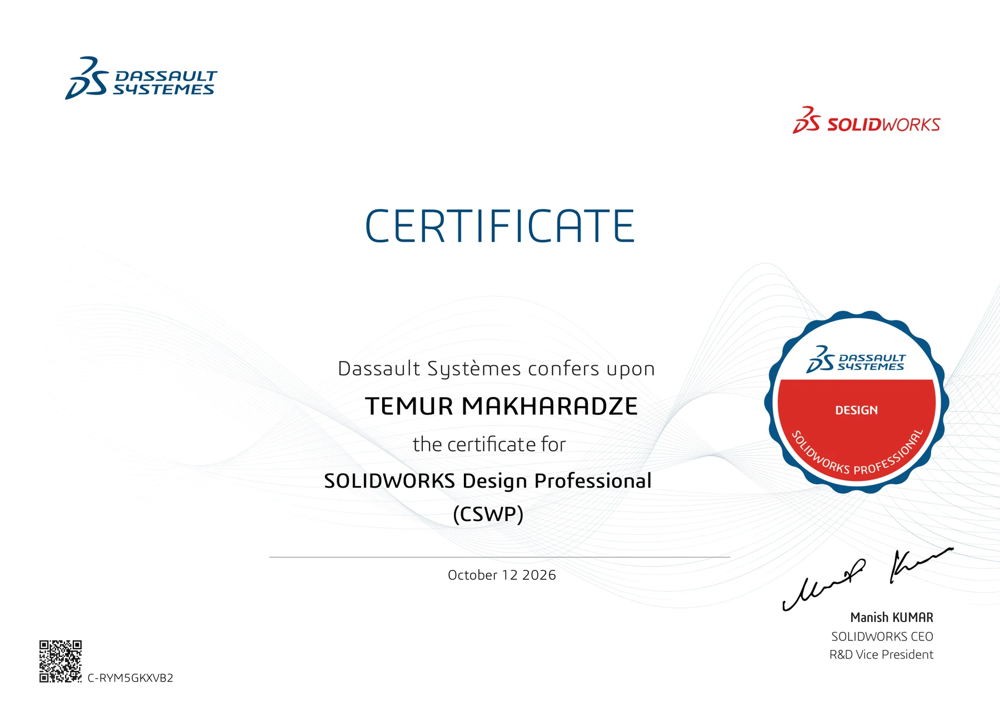
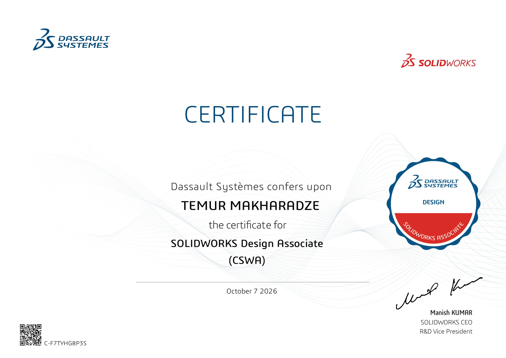
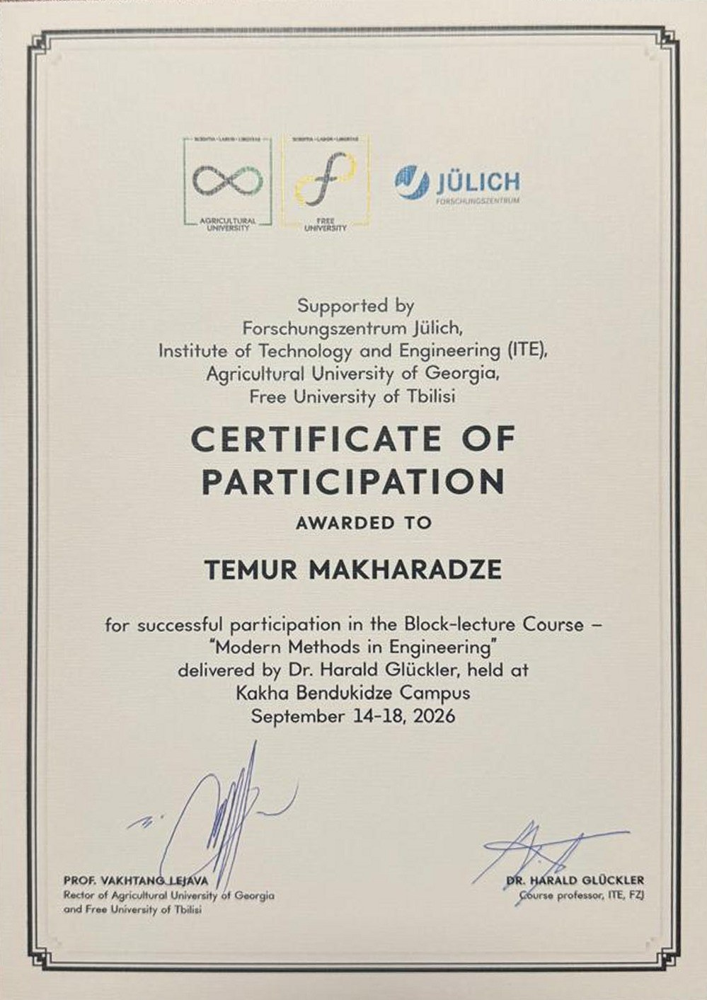

Courses and certificates
Certified.
Two SOLIDWORKS certifications from Dassault Systèmes, and a course taught by Forschungszentrum Jülich.
SOLIDWORKS.
Both certificates can be verified with Dassault Systèmes using their IDs.

SOLIDWORKS Design Professional (CSWP)
- Issued by
- Dassault Systèmes
- Date
- 12 October 2026
- Certificate ID
- C-RYM5GKXVB2

SOLIDWORKS Design Associate (CSWA)
- Issued by
- Dassault Systèmes
- Date
- 7 October 2026
- Certificate ID
- C-F7TYHG8P3S
Non-destructive testing.
A five-day block-lecture course on how to examine a part without damaging it.

Modern Methods in Engineering
- Lecturer
- Dr. Harald Glückler, Institute of Technology and Engineering, Forschungszentrum Jülich
- Dates and place
- 14 to 18 September 2026, Kakha Bendukidze Campus, Tbilisi
- Supported by
- Forschungszentrum Jülich ITE, Agricultural University of Georgia, Free University of Tbilisi
- Final test
- Written. Grade and class percentile to be announced
What the course covered
- X-rays: how they are made and absorbed, radiography, computed tomography and neutron radiography.
- Infrared thermography: the radiation laws, infrared cameras, and passive, lock-in and pulse methods.
- Ultrasonic testing: sound in solids, probes and scan types, finding defects and measuring thickness.
- Leak detection: leakage rates, test methods, vacuum gauges and helium leak detectors.